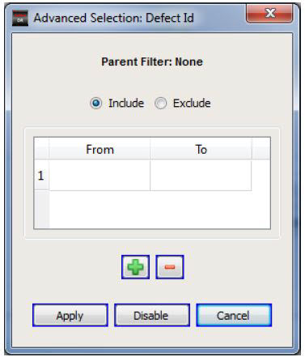
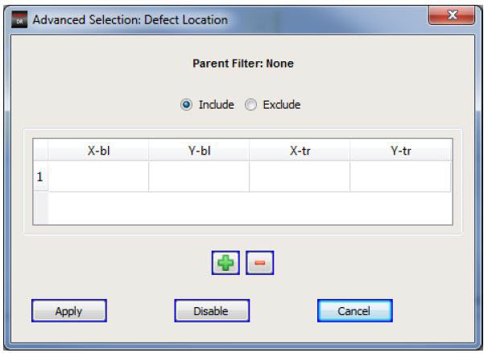

The advanced
selection attributes include Defect Location and so on, for which
values can be entered as a series of ranges or rectangles.
Procedure
- Double-click on any advanced
selection attribute. Advanced selection attributes are indicated
by a blue arrow icon. The Advanced Selection dialog box appears.
- In the Advanced Selection
dialog box, you can specify attribute ranges (see Figure 1) or the coordinates of rectangles (see Figure 2).
Specify ranges in the From and To fields.
Specify rectangles as
X-bl (bottom left x-coordinate), Y-bl (bottom left y‑coordinate),
X-tr (top right x-coordinate) and Y-tr (top right y-coordinate)
as shown in Figure 2.
Figure 1. Using Advanced Selection
to Enter Ranges
Figure 2. Using Advanced Selection
to Enter Rectangles
- To enter values:
Type the values in the
table cells. You can use the Tab key to navigate to the cells.
To add a new row for values,
click the green plus button. A new row is added.
If you enter any range in which
the From value is larger than To value, when you click Apply,
an error message is generated:
Invalid range in row: 1
If you enter conflicting rectangle
coordinates and click Apply,
then an error message is generated.
Invalid rectangle in row: 1
- To remove values:
- Select the row to be deleted
by clicking on the row header or any cell of the row.
- Click the red minus button.
- To include the selection in
analysis, select the Include option.
For example, if you have entered the range 1 to 10 in the defect
number entry, only the defects numbered 1 to 10 are considered for
analysis.
- To exclude the values entered
in analysis, click the Exclude radio
button. For example, if you enter the range 1 to 10 in the defect
number entry, defects numbered 1 to 10 are not considered for analysis.
- To apply the values, click
the Apply button. To deactivate the
selection based on the entered values for a particular advanced
selection attribute, click the Disable button.